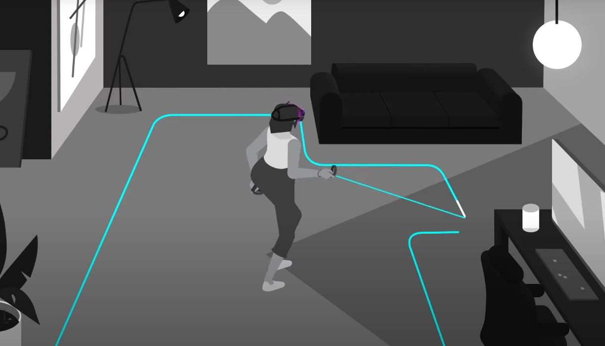
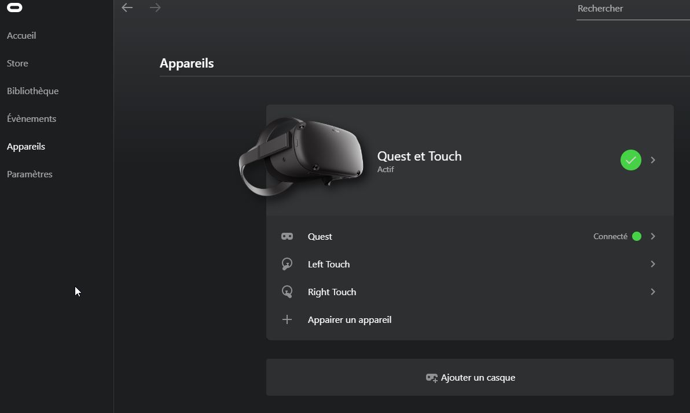

Dans le cadre du cours, des casques Quest ou Quest 2 vous serons prêtés.
Le "Guardian" est la zone de jeu dont vous disposez avec votre casque. Il est important de le configurer chaque fois que vous changez d'endroit avec votre casque. En effet, c'est grâce à lui que vous verrez quelles sont les limites de votre zone de jeu et que vous éviterez des blessures ou des bris d'équipement. Le "Guardian" s'affichera uniquement si vous vous approchez trop de la limite de votre zone de jeu. Sinon vous ne le verrez pas.
Comme vous le voyez sur l'image, il est important de laisser un peu d'espace entre les murs ou objet et le guardian. Ainsi, si vous dépassez un peu vous aurez le temps de voir que vous êtes sortis de la zone avant de toucher un objet.
Il existe plusieurs modes "Guardian", le premier est la limite Roomscale. C'est ce qu'on voit dans l'image, c'est une zone de jeu qui vous permet de vous déplacer à travers une pièce. Pour certains jeux, vous pourrez rester assis et n'aurez pas à vous déplacer. À ce moment, vous pouvez utiliser une limite stationnaire. Celle-ci est beaucoup plus petite et prévoit que vous ne marcherez pas à travers la pièce.
Le tout en vidéo:
Avant de commencer, assurez-vous que le logiciel Oculus est installé sur votre ordinateur.
Assurez-vous d'être sur la bonne version de casque (Quest ou Quest 2), puis appuyez sur télécharger le logiciel.
Assurez-vous de brancher votre casque avec le USB-C dans l'ordinateur.
Dans le logiciel Oculus, ouvrez l'onglet appareil. Vous devriez maintenant voir votre casque en vert:
Le tout en vidéo: